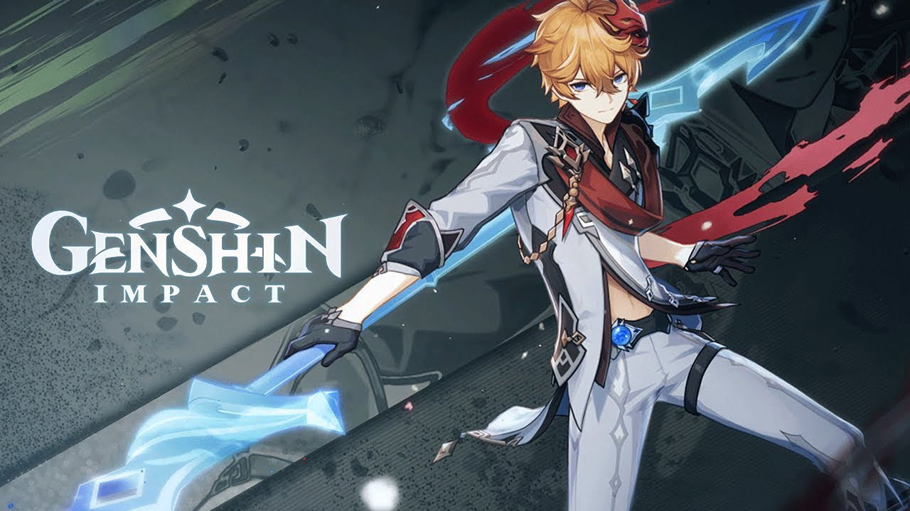
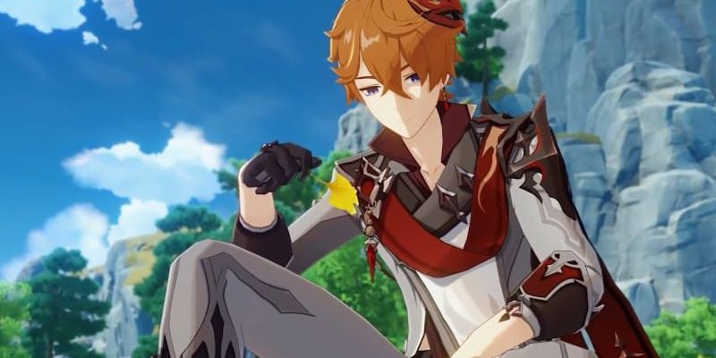
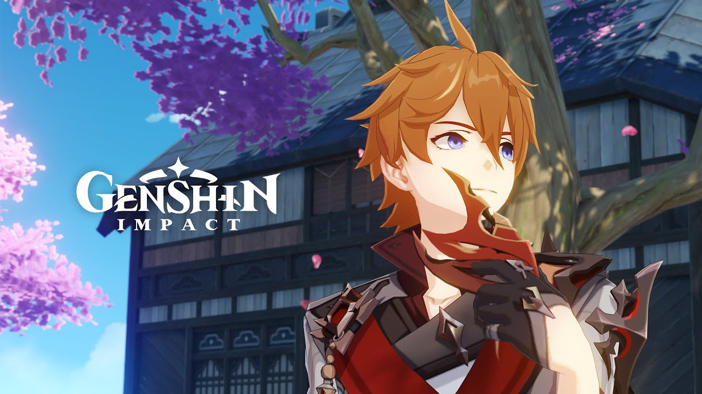
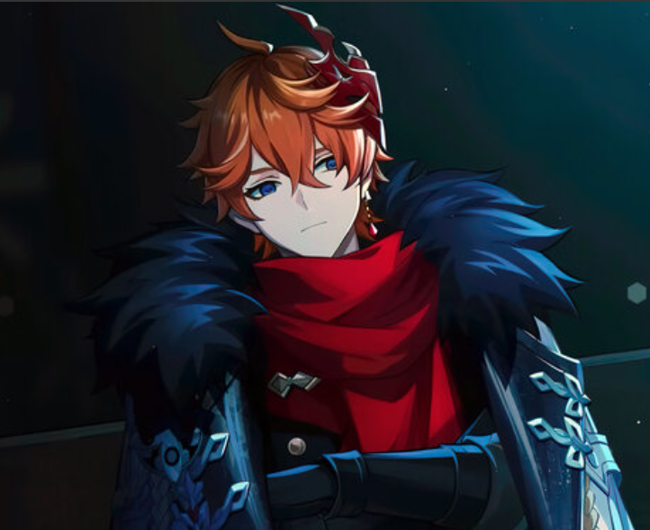

| Требуемые предметы для Возвышения уровня 40 | Звездная ракушка – 3 штуки, Осколок лазурита Варунада – 1 штука, Шеврон рядового – 3 штуки. |
|---|---|
| Требуемые предметы для Возвышения уровня 50 | Звездная ракушка – 10 единиц, Фарагмент лазурита Варунада – 3 единицы, Шеврон рядового – 15 штук, Очищающее сердце – 2 штуки. |
| Требуемые предметы для Возвышения уровня 60 | Звездная ракушка – 20 штук, Фрагмент лазурита Варунада – 6 штук, Шеврон сержанта – 12 штук, Очищающее сердце – 4 единицы. |
| Требуемые предметы для Возвышения уровня 70 | Звездная ракушка – 30 штук, Кусок лазурита Варунада – 3 штуки, Шеврон сержанта – 18 штук, Очищающее сердце – 8 единиц. |
| Требуемые предметы для Возвышения уровня 80 | Звездная ракушка – 45 единиц, Кусок лазурита Варунада – 6 штук, Шеврон офицера – 12 единиц, Очищающее сердце – 12 единиц. |
| Требуемые предметы для Возвышения уровня 90 | Звездная ракушка – 60 штук, Драгоценный лазурит Варунада – 6 единиц, Шеврон офицера – 24 штуки, Очищающее сердце – 20 штук. |
